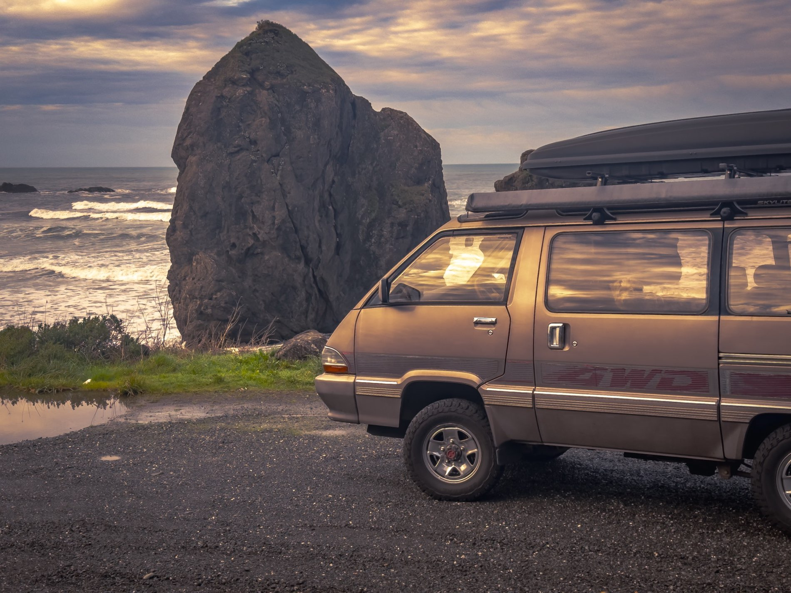

Plate 03 Character
It has a personality.
The part that is not in the spec sheet is the part people remember.
The Royale is less like owning an old vehicle and more like travelling around with a strange little room that keeps changing what a trip can be. It turns parking lots into conversations. Someone always walks over. They always ask the same three questions.
None of that is engineering. All of it is the reason it is still here.
- Asked most
- “What is that?”
- Asked second
- “Is the steering wheel on the wrong side?”
- Asked third
- “Would you sell it?”